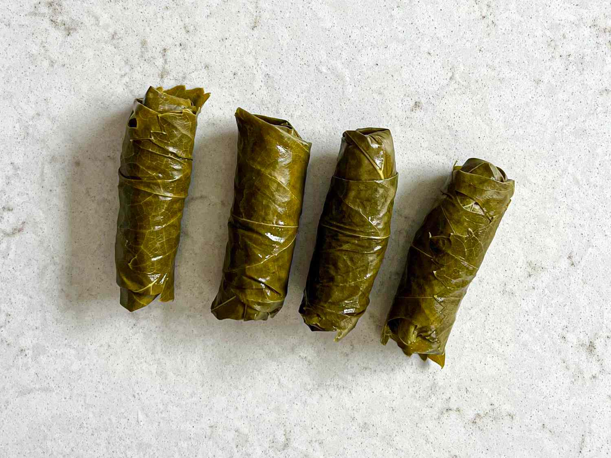

Dawali Recipe
Dawali

Description
Dawali also known as dolma or stuffed grape leaves, is a popular dish in many Middle Eastern and Mediterranean countries. The dish is made by filling grape leaves with a mixture of ground meat, rice, onions, garlic, tomato paste, and various spices and herbs, then rolling them up and cooking them in broth.
The dish is typically served hot as an appetizer or as part of a larger meal, and is often accompanied by sauces or dips such as yogurt or tomato sauce. The grape leaves impart a slightly sour and tangy flavor to the filling, while the meat and spices provide a savory and satisfying taste. Dawali is a nutritious and delicious dish that is enjoyed by many people around the world.
Ingredients
- 1 jar of grape leaves in brine (about 60 leaves)
- 500g of ground beef or lamb
- 1 cup of white rice
- 1 large onion, finely chopped
- 4 cloves of garlic, minced
- 2 tablespoons of olive oil
- 2 tablespoons of tomato paste
- 2 tablespoons of chopped fresh parsley
- 2 tablespoons of chopped fresh mint
- 1 tablespoon of ground cumin
- 1 tablespoon of ground coriander
- 1 tablespoon of salt
- 1 teaspoon of black pepper
- 2 cups of chicken or beef broth
- 2 lemons, sliced
Steps
- Rinse the grape leaves in cold water to remove excess salt and blanch them in boiling water for a few minutes until they become soft. Drain and set aside.
- In a large bowl, mix together the ground beef or lamb, white rice, chopped onions, minced garlic, tomato paste, fresh parsley, fresh mint, ground cumin, ground coriander, salt and black pepper. Mix well to combine.
- Take one grape leaf and place it on a flat surface with the shiny side down and the stem side facing you. Place a tablespoon of the meat mixture on the leaf, near the stem end.
- Roll the leaf around the filling, tucking in the sides as you go, to form a small package. Repeat with the remaining grape leaves and filling.
- In a large pot, place the rolled grape leaves tightly in layers, with the seam side down to prevent them from opening up during cooking.
- Pour the chicken or beef broth over the grape leaves, add the sliced lemons on top and cover the pot with a lid.
- Cook the grape leaves over medium heat for about 45 minutes, or until the meat and rice are fully cooked and the liquid is absorbed.
- Serve hot with lemon wedges on the side.
Enjoy!
Return to main page